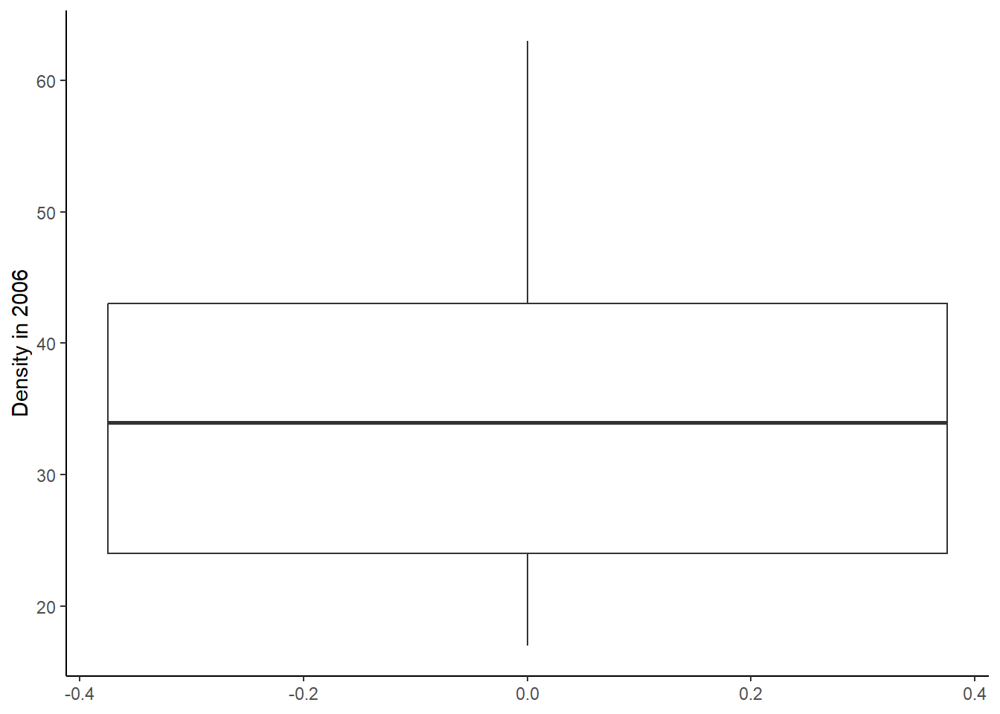
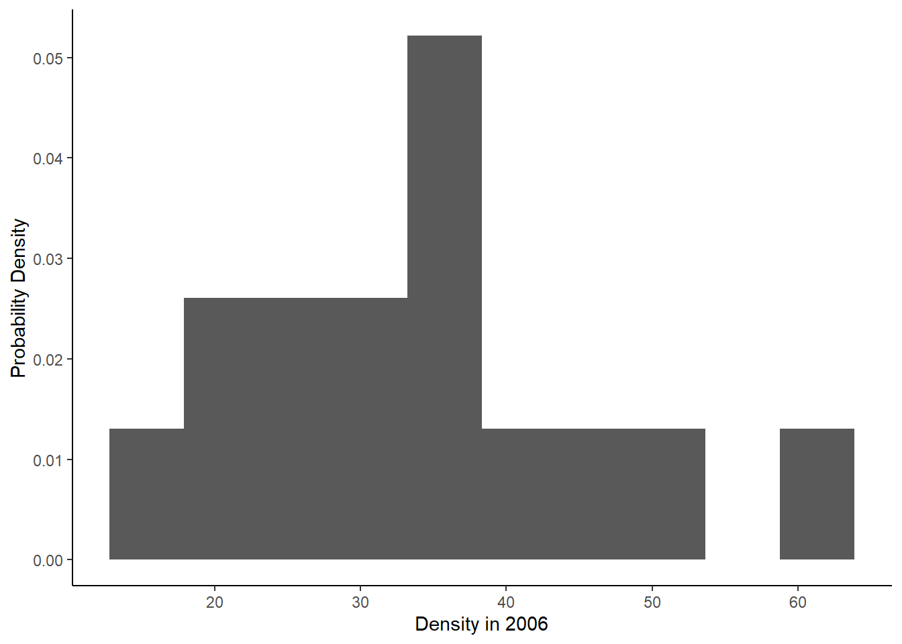
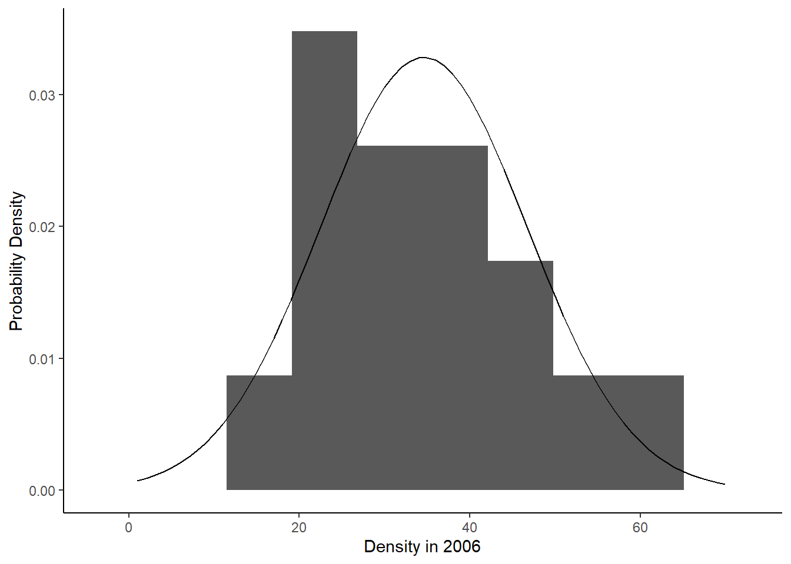
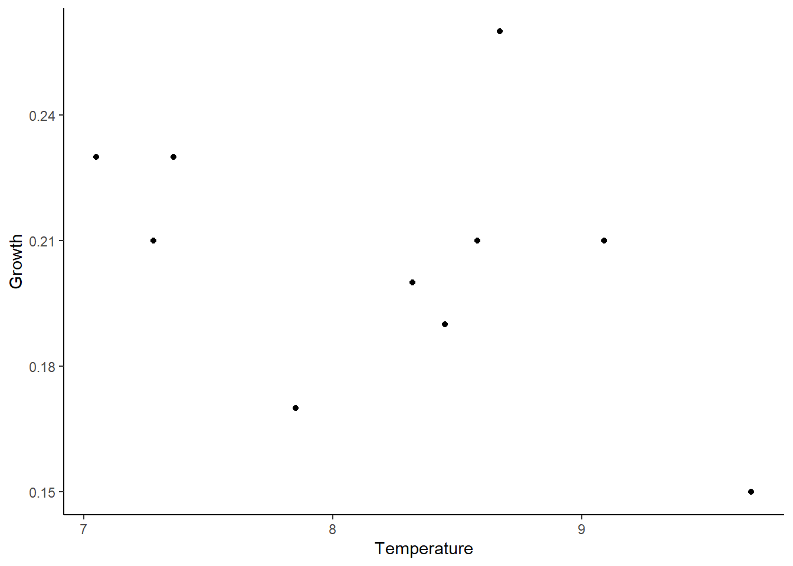
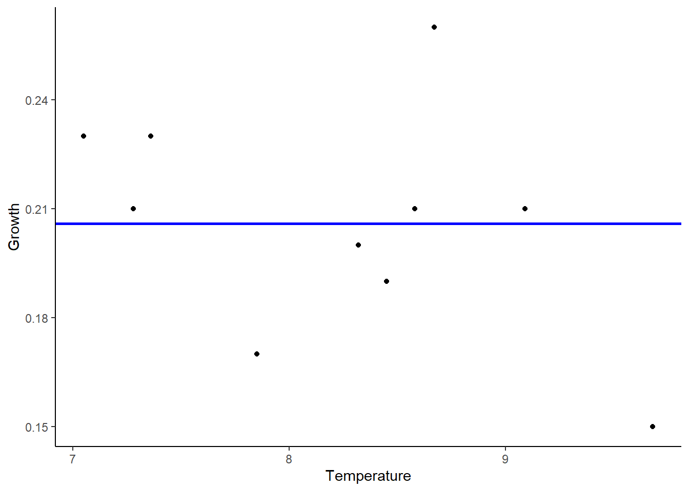
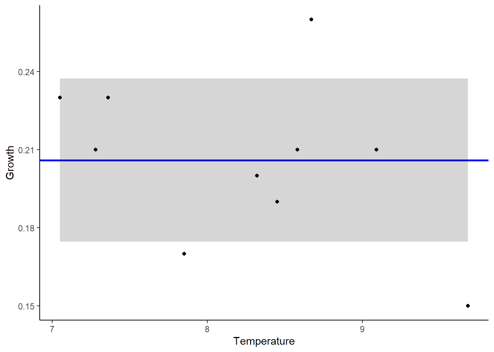
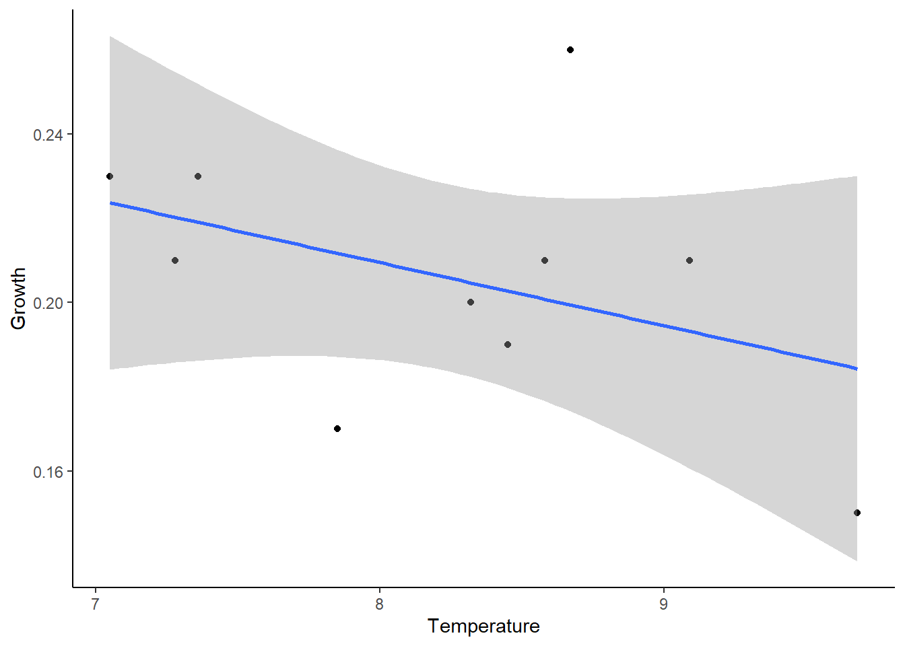

ESS 3500 R Handbook, Lesson 6
Emily Schultz
2023-03-18
Lesson 6: VISUALING STATISTICAL MODELS
In Lesson 5, you practiced building and parameterizing linear models in R. In this lesson, you will learn different ways of visualizing these models. For this lesson, we will work with the same models you built in Lesson 5, so go ahead and open your R script from lesson 5. You can add the code for this Lesson to the same script file, if you would like.
We will use the ggplot2 package to create these graphs, so load that package now.
library(ggplot2)6.1 Discrete predictor variable
We will once again start with our civu example with a discrete (categorical) independent variable and a continuous dependent variable.
Using the script file from Lesson 5, run all of the code you wrote for the civu example, including the building of both the null and alternative models. Be sure you first have your working directory set to the folder containing the civu data set.
We will learn two different ways of visualizing the data and model. The first does not explicitly use the model output, but the second will allow you to visualize how the distribution of the data compares to the distribution predicted by the model.
Box plots
The first type of graph we will make is a boxplot. Good news! You already practiced making this type of plot in Lesson 4!
As I mentioned, this type of plot does not explicitly incorporate the model output. However it will show information similar to the parameters R calculated when you ran the models in R: central tendency and variation.
Let’s start with our box plot for our null model. Just like when we worked with ggplot in the past, we will start by specifying the data and variables we want to include in our graph. Then we add layers to the code to specify the type of graph we want. For this first graph, we will use the civu data set. Because this is our null model, we are assuming that herbivory does not affect plant density, so we just want to graph a single distribution for all of our data. Therefore, unlike when we created box plots before, when we specified both and x and y variable, we will just specify the y variable this time (our plant density variable). In the following lines of code, we tell R to make a box plot, change the axis label, and use the classic theme that removes the background color and gridlines. Because R likely classified our herbivory treatment variable as a numeric variable when we loaded the data, we will also reclassify that variable as a factor before we make our graph.
civu$herbivory <- as.factor(civu$herbivory)
ggplot(data = civu, aes(y = density_2006)) +
geom_boxplot() +
labs(y = "Density in 2006") +
theme_classic()
Now let’s make an equivalent plot for our alternative model. We will make a box plot, just as before, but this time including herbivory as our x variable.
ggplot(data = civu, aes(x = herbivory, y = density_2006)) +
geom_boxplot() +
labs(x = "Herbivory treatment", y = "Density in 2006") +
theme_classic()
This type of plot is commonly used both in exploratory analysis and as a final plot that might be included in a manuscript. Although it does not explicitly use the output of the model, I will always accept this type of plot as a good way of summarizing the distribution of your data and how that distribution might vary between categories.
Density Plots
The second type of plot we will make is more complicated and probably less commonly used. However, I want you to create them in this exercise for two reasons:
This type of plot reinforces that when we build models, we are using our data to estimate the parameters of a distribution that we think represents the distribution of our variable in the underlying population. It will also allow you to visualize how the estimated distribution compares to the actual distribution of your sample data.
It will demonstrate how to use ggplot to add multiple layers to the same graph.
Remember, though, that box plots are a good way to visualize data like these, so if you are not comfortable making these density plots on your own, you may stick with box plots for visualizing your own data.
Null model
We will start with the graph for the null model. We will take this in steps, first creating a histogram of our sample data, which should be familiar from Lesson 4. Then we will add another layer to the plot with the distribution estimated from our model.
Let’s create our histogram. Our null model assumes the distribution
of plant density does not depend on the herbivory treatment, so for this
graph, we will just make a single histogram of all of our density data.
This code is the same code we used to histogram these data in Lesson 4,
with one change. In Lesson 4, we graphed the frequency of each range of
plant density values, i.e., the count of observations that fell within
each range. However, when we add our estimated distribution from the
model, we will be plotting the probability density of each possible
plant value. The probability density is not on the same scale as the
frequency because the frequency depends on the total sample size as well
as the probability of observing each range of plant density values.
Therefore, in order to compare the sample distribution and the estimated
distribution, we will convert the frequency to the probability density.
You can see this step in the second line of code below, as an argument
in the geom_histogram function. The argument we add is
aes(y=after_stat(density)). This argument tells R to
calculate the probability density and use that as our y variable in
place of the frequency. Try it out!
ggplot(data = civu, aes(x = density_2006))+
geom_histogram(aes(y=after_stat(density)),bins = 10) +
labs(x = "Density in 2006", y = "Probability Density") +
theme_classic()
Now we have a graph showing the distribution of the plant density data from our sample. Next, we will add the distribution estimated from our model. We have the mean and the standard deviation of the distribution in our model output. We will use these to create a data set representing the distribution that we can add to our graph.
We’ll start by saving the mean and standard deviation from our null
model. If you ran all of the code from Lesson 5, you should already have
the standard deviation saved as a variable. Check now by typing the
variable name null_sd_civu into your console. If you get an
error saying this variable does not exist, go back to your lesson 5 code
and run the lines of code in the Model Variance section of Lesson 5.1.
To save the mean as a variable, we need to pull the value out the of
model coefficients from the null model. We can indicate to R that we
want the coefficients from the civu_null model using the
civu_null$coefficients command. Then we tell R which
coefficient we want, using brackets to index the vector of coefficients.
In this case, there is only one coefficient, which is the mean, so we
will put a 1 inside the brackets to pull out the first (and only)
coefficient.
# Save distribution mean from null model parameters
null_mean_civu <- civu_null$coefficients[1]Next what we need to do is create a new data frame to represent the estimated distribution. This data frame will need to have two columns: one with a range of possible plant density values and one with the probability (probability density, technically) of observing each of those plant density values.
First, we will create our variable with range of possible plant
density values. We will have our values range from 1 to 70, which covers
the full range of values we observed in the data. To create this
variable, we will use the seq function. We need to provide
the function with two arguments, representing the first and last value
in the sequence we want.
# Create vector with a range of plant density values from 1 to 70
density_range <- seq(1,70)Then we need to calculate the probability of observing each of these
values, based on the parameters (mean and standard deviation) calculated
for our estimated distribution in our null model. Remember, in this type
of model, we assume our data are normally distributed, so we will be
making these probability calculations based on a normal probability
distribution with the mean and standard deviation from our model. We can
do this in R using the dnorm function. If we provide the
function with the values we want to calculate the probability of, the
mean, and the standard deviation, it will calculate the probability
density for each value.
# Calculate the probability (density) of each plant density based on normal distribution with mean and sd calculated from null model
prob <- dnorm(density_range, mean = null_mean_civu, sd = null_sd_civu)Okay, now we have our range of values and the probability density of observing each values based on the distribution estimated from our null model. We will put these together into a data frame, which is the format required by ggplot. Then we will be able to add the distribution to our graph!
# Put density range and probabilities in a data frame
civu_null_data <- data.frame(Density = density_range, Probability = prob)
# View top few rows of data frame
head(civu_null_data)## Density Probability
## 1 1 0.0007194537
## 2 2 0.0009001005
## 3 3 0.0011185103
## 4 4 0.0013805424
## 5 5 0.0016924673
## 6 6 0.0020608748Time for the final step in making our graph: adding a layer to our
previous histogram to show the estimated distribution. We will just add
one more line of code underneath the geom_histogram
function to add the layer. This time, we will use the
geom_density function, which will plot a smooth
distribution instead of dividing the data into discrete bins. The catch
here is that we are using a new data frame, so inside the
geom_density function, we need to provide ggplot with the
new data frame and the new x (plant density values) and y (probability)
variables we want to graph. The format for this is the same as the
format we use in the ggplot function in the first line of
code. The other argument we need to add is the
stat = "identity" argument, which tells ggplot to use the
probability values given in the data set instead of doing summary
calculations with the data.
ggplot(data = civu, aes(x = density_2006))+
geom_histogram(aes(y=after_stat(density)),bins = 10) +
geom_density(data = civu_null_data, aes(x = Density, y = Probability), stat="identity") +
labs(x = "Density in 2006", y = "Probability Density") +
theme_classic()
There we have it! The histogram on our graph shows in the distribution of plant density in our sample data, and the smooth curve shows our estimated distribution of plant density in the underlying population. We can quickly visualize the mean plant density, the amount of variation, and how well our sample data match our estimated distribution.
Alternative model
Now we will repeat the above process for our alternative model. Our approach will be the same, but this time we will be graphing separate distributions for the herbivory and no herbivory treatments. This will be a little more complicated, but it will also give you a chance to play with color and other settings in ggplot to make the visualization more clear!
We will again start by making the histogram of sample data. We will
graph the data for each treatment in a different color, so we can see
how herbivory affects the distribution of plant density. To do this, we
will add a “colour = herbivory” argument inside the
aes function in the geom_histogram command.
This tells ggplot to create a histogram of plant densities for each
treatment, and use a separate color for each. The other argument we will
add outside the aes function is the “fill = NA”
argument, which tells ggplot not to add a fill color to the histogram
bars. This will just make it easier to see everything after we add the
other layer.
We will also manually set the colors we want ggplot to use. The
default color palette used by R is not colorblind friendly, so I always
like to choose colorblind friendly options instead. There are a number
of websites where you can find colorblind friendly palettes. I will post
some links in the R discussion forum on Canvas. Many have accompanying R
packages you are welcome to explore, but I often just look up the hex
codes for the colors I want and use those in my code. We set the colors
using the scale_colour_manual function, and we can simply
provide ggplot with the hex codes we want using the “values”
argument.
ggplot(data = civu, aes(x = density_2006))+
geom_histogram(aes(y=after_stat(density), colour = herbivory), fill = NA, bins = 10) +
scale_colour_manual(values=c("#ce9642","#3b7c70")) +
labs(x = "Density in 2006", y = "Probability Density") +
theme_classic()
On this new graph, we can see the plant density in the presence of herbivores in yellow and the plant density in the absence of herbivores in green, quickly showing the difference between the two.
It is now time to add the estimated distributions from our
alternative model. First we need to set up the data frame with the data
representing our distributions. This time, we will need to calculate two
sets of probability densities: one for each herbivory treatment. Check
that you have saved the standard deviation for the alternative model by
typing alt_sd_civu into the console. Go back and run the
Model Variance code from Lesson 5 as necessary.
Next, calculate the means for each treatment. Remember, in this time of model, when we include a predictor variable, we are calculating different means for each treatment, so we need to calculate two means here. The mean for herbivory = 0 (herbivores present) is simply the intercept from the model and the mean for herbivory = 1 (herbivores absent) is the intercept plus the herbivory coefficient, which is the second values in the coefficients vector from the model. (If this doesn’t make sense go back to Lesson 5 to review it, or ask me.)
# Save distribution means from altnernative model parameters
mean_civu_0 <- civu_alt$coefficients[1]
mean_civu_1 <- civu_alt$coefficients[1] + civu_alt$coefficients[2]Now we have the values we need to calculate the probability
densities, so lets create our range of plant density values and
calculate the associated probabilities, again using the
dnorm function. We will need to do this twice, once for
each herbivory treatment, but we will put the values together into a
single vector using the c function. For example, for our
plant density values, and then we will combine together two sequences
from 1 to 70 into a single vector. Then, to calculate the probabilities,
we will do the calculation on one of the plant density ranges using the
mean for the herbivory = 0 treatment, and then we will do the
calculation again using the mean for the herbivory = 1 treatment,
combining the two sets of densities together into one vector. We will
also need a third vector to represent our treatment. This vector will
contain a series of 70 zeros (one for each plant density value) followed
by a series of 70 ones.
# Create vector with a range of plant density values from 1 to 70. Repeat for herbivory = 0 and herbivory = 1
density_range <- seq(1:70)
density_range_alt <- c(density_range, density_range)
# Calculate the probability (density) of each plant density based on normal distribution with mean and sd calculated from null model
prob_alt <- c(dnorm(density_range, mean = mean_civu_0, sd = alt_sd_civu),dnorm(density_range, mean = mean_civu_1, sd = alt_sd_civu))
# Create a vector with herbivory treatment (0 or 1)
herb <- as.factor(c(rep(0,70),rep(1,70)))Finally, put together your three variables into a data frame.
# Put density range, probabilities, and herbivory treatment in a data frame
civu_alt_data <- data.frame(Density = density_range_alt, Probability = prob_alt, Herbivory = herb)
# View top few rows of data frame
head(civu_alt_data)## Density Probability Herbivory
## 1 1 0.005551099 0
## 2 2 0.006721929 0
## 3 3 0.008060214 0
## 4 4 0.009570551 0
## 5 5 0.011252914 0
## 6 6 0.013101794 0We now have the data frame we need to create our final graph, where
we add our estimated distributions to our histograms. We will do this as
before, but this time, we will add the geom_density
function before the geom_histogram function to plot the
denisty underneath the histogram. The code is the same we used for the
null model, but this time we add additional “fill” and “color” arguments
inside the aes function to graph the lines and fill for the
two distributions in different colors. We also add another argument at
the end of the geom_density function (“alpha = 0.3”) to
make the fill color transparent. The only other thing we need to do is
manually set the fill color the way we did for the line color. The
syntax is the same as for line color, but this time the function is
scale_fill_manual.
ggplot(data = civu, aes(x = density_2006))+
geom_density(data = civu_alt_data, aes(x = Density, y = Probability, fill = Herbivory, colour = Herbivory), stat="identity", alpha = 0.3) +
geom_histogram(aes(y=after_stat(density), colour = herbivory),fill = NA , bins = 10) +
scale_colour_manual(values=c("#ce9642","#3b7c70")) +
scale_fill_manual(values=c("#ce9642","#3b7c70")) +
labs(x = "Density in 2006", y = "Probability Density") +
theme_classic()
Here we have our final graph, with the bars of the histograms showing the sample distributions and the shaded density plots showing the estimated population distributions for the two herbivory treatments based on the alternative model. If you would like, feel free to play around with some of the parameters like the number of bins in the histogram, the alpha (transparency) value, and the colors, to see how that impacts the aesthetics of the graph!
5.2 Continuous predictor variable
We will now move on to our tree example with a continuous independent variable and a continuous dependent variable. This will be easy compared to the previous set of graphs you made! To visualize these models, we will use scatter plots of the sample data along with best fit lines to represent the distributions predicted by the models.
If you haven’t already, use the script file from Lesson 5 to run all of the code you wrote for the tree example, including the building of both the null and alternative models. Be sure you first have your working directory set to the folder containing the DataFrameExample data set.
Null model
Let’s start with the null model: temperature does not affect the growth of trees. We’ll make the scatter plot of the sample data first. This is the same method we used to make scatter plots in Lesson 4.
ggplot(data = tree, aes(x = Temperature, y = Growth))+
geom_point() +
labs(x = "Temperature", y = "Growth") +
theme_classic()
Now we will add our best fit line. To add our best fit line, we will
need the intercept value from our tree_null model. We will save this as
a variable called tree_mean. Then we will use this value to
add our line. Because the null model assumes no effect of temperature on
growth, we will be adding a line with a slope of zero and the intercept
from our model. We will add it to the scatter plot we created above
using the geom_hline function, which will add a horizontal
line. The argument we need to give this function is the value of the
intercept, which is our tree_mean variable. I also added a
“linewidth” argument to make the line thicker and a coulour argument to
make the line blue.
# Save mean value from null model
tree_mean <- tree_null$coefficients[1]
# Make graph
ggplot(data = tree, aes(x = Temperature, y = Growth))+
geom_point() +
geom_hline(yintercept = tree_mean, linewidth = 1, colour = "blue") +
labs(x = "Temperature", y = "Growth") +
theme_classic()
Finally, we will add shading around the line to show our estimate of variation (measured as standard deviation) from our null model. Type 0.0313404 into your console to make sure you have this standard deviation saved as a object, and run the Model Variation code from Lesson 5.2 again if necessary.
We will add the shading using the geom_ribbon function.
We need to provide this function with minimum and maximum y values to
represent the lower and upper bounds of the ribbon. Our lower and upper
bounds will be based on the standard deviation. The upper bound will be
our mean estimate plus the standard deviation and the lower bound will
be the mean estimate minus the standard deviation. I also added the
alpha argument at the end of the function to make the fill of the ribbon
transparent.
# Make graph
ggplot(data = tree, aes(x = Temperature, y = Growth))+
geom_point() +
geom_hline(yintercept = tree_mean, linewidth = 1, colour = "blue") +
geom_ribbon(aes(ymin = tree_mean - null_sd_tree, ymax = tree_mean + null_sd_tree),alpha = 0.2) +
labs(x = "Temperature", y = "Growth") +
theme_classic()
Now we can see our model output overlaid on the raw data points from our sample data to get a visual of how well our model matches our data and how much variation in our data is not explained by our model.
Alternative model
Now we’ll move on to our alternative model, which includes an effect of temperature on the tree growth. This might actually be the easiest graph we have made in the lesson so far because ggplot has the capacity to run this linear model itself and add the output to the graph without us needing to manually add the parameters!
We will use the geom_point function to plot the sample
data points, as before, but this time we will use the
geom_smooth function to add the line respresenting our
model. Because we are using the same data set and variables that we
specified in the opening ggplot function, the only argument
we need to add is the method we want ggplot to use to build and
parameterize our model. We set the method to “lm”, short for “linear
model”, which is the same type of model we used in Lesson 5.
ggplot(data = tree, aes(x = Temperature, y = Growth))+
geom_point() +
geom_smooth(method = "lm") +
labs(x = "Temperature", y = "Growth") +
theme_classic()## `geom_smooth()` using formula = 'y ~ x'
Like with our previous graph, you will see a best fit line representing the mean of the distribution, which now varies with temperature, and shading to represent variation, or uncertainty, in the mean. The biggest differnce is that this time the shading represents the 95% confidence interval, rather than the standard deviation. The 95% confidence interval basically says that if we repeated our experiment over and over again, we would expect the mean value estimated from our data to fall within that interval 95% of the time. Like the standard deviation, it is method of representing the variation in our data. Both measures (as well as variance and standard deviation) are acceptable ways of representing the variation. What is important is that when you present your results, you make it clear in your figure captions and text what measure of variation you used.
You have now gone through the whole process of building and visualizing statistical models! In the upcoming lessons, we will focus on how we do formal comparisons of models to determine which model(s) best represent our data.